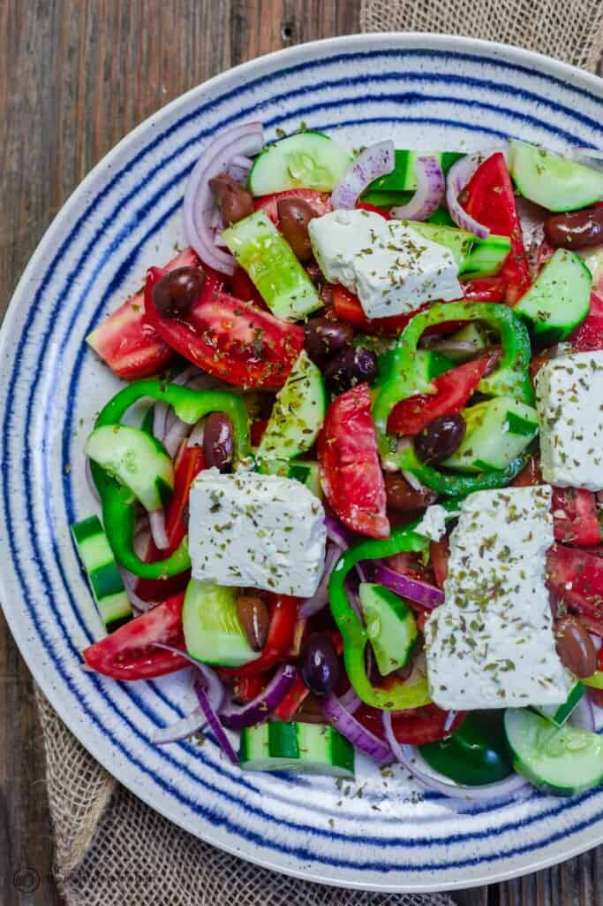

Greek Salad

Description
Nothing like traditional Greek salad! Cucumbers, tomatoes, green peppers and onions with olives and creamy feta. No special dressing, just a drizzle of citrus and olive oil.
Ingredients
- Tomatoes
- Cucumbers
- Onions
- Olives
- Bell peppers
- Creamy Feta Cheese
Steps
- Cut the vegetables into large slices or chunks. The base ingredients of tomatoes, cucumbers, bell peppers and onions are typically cut in large slices or chunks and served in a bowl (or in a small bowl for each individual).
- Use pitted kalamata olives or black olives and assemble them on top of your vegetables.
- Season with a dash of kosher salt and dried oregano. I like to finish with a bit more dried oregano at the end.
- Drizzle with good extra virgin olive oil and a splash of red wine vinegar. OR, place bottles of oil and vinegar on the table so that each person can dress the salad to their liking.
- Add blocks of feta (never crumbled feta) on top.
- Serve immediately!